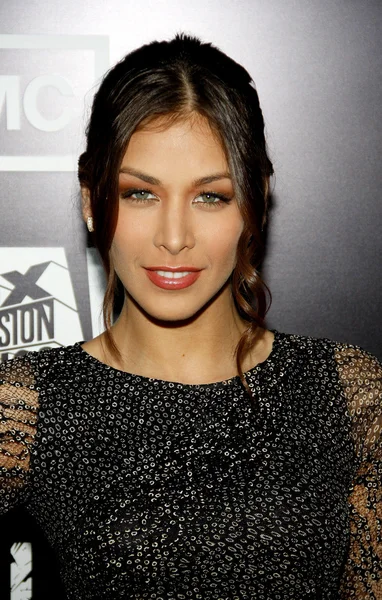

Dayana Sabrina Mendoza Moncada (Caracas, Venezuela; 21 de Septiembre de 1995) es una artista, diseñadora gráfica y fotógrafa venezolana. Además ha logrado obtener certificados de Adobe (ACE y ACA) en softwares como Adobe Photoshop y Adobe Lightroom, ha sido galardonada con premios como Adobe Creative Jam, The Transform Awards y The European Packaging Design Association Awards. Nació en la ciudad de Caracas, capital de Venezuela, criándose en la parroquia La Urbina en los alrededores de Petare, sus padres son Willy Mendoza y Laura Moncada oriundos de los estados del Táchira y Aragua, criándose desde pequeña en las zonas más populares de Caracas, pese a ser de una familia de clase media.
En marzo de 2015, inicia sus estudios por primera vez en forma profesional en el área de Diseño Gráfico en el Instituto de Diseño de Caracas. Dayana ya había hecho dibujos, ilustraciones, además de manualidades caseras desde la niñez más temprana, siendo influenciada desde pequeña por relatos fantásticos, fábulas, cuentos, literatura infantil, mitos y leyendas urbanas, además de corrientes surralistas. En el año 2008, ganó a sus trece años de edad su primer premio en su escuela conocido como Premio Artediez premio que le valió su primer reconocimiento a escala municipal. El premio le fue otorgado gracias a una ilustración hecha utilizando tizas y creyones, ilustración basada en una popular leyenda urbana venezolana conocida como La Sayona una popular leyenda de terror en el imaginario colectivo de su país.
Estudió en el colegio Cristo Rey, ubicado en el Municipio Libertador de Caracas, donde estudió desde el preescolar hasta graduarse de bachiller, obteniendo uno de los mejores promedios de notas de su promoción. Dayana Mendoza ha confesado en repetidas ocasiones que si bien, su pasión fue siempre el arte y el diseño, en un principio tenía pensado estudiar Comunicación Social en la Universidad Central de Venezuela, pero debido a problemas personales con su familia, se vio obligada a retirarse de la carrera y tomarse un año sabático desde 2014 hasta 2015, año en el que inicia su carrera profesional como diseñadora e ilustradora en el Instituto de Diseño de Caracas.
Desde que Dayana Mendoza era muy pequeña, desde los 7 y 8 años de edad, ella disfrutaba haciendo esculturas de plastilina de sus personajes favoritos de sus principales caricaturas de la infancia, desde princesas de Disney, hasta esculturas de pokemón, y algunos personajes de Tim Burton, de Nickelodeon y Cartoon Network. Al cumplir los 10 años de edad, Dayana fue llevada a iniciativa de sus propios padres a un curso de masa flexible, donde ella aprendió a manejar la masa flexible e incluso la arcilla, aprendió a crearla y darle firmeza y solidez a sus primeras figuras. A los 15 años, Dayana Mendoza fue a una escuela de arte, donde le impartieron clases mucho más avanzadas y especializadas de dibujo, pintura, escultura, cerámica, grabado e historias del arte. Aquí es donde empezó a profundizarse su pasión por el arte, donde gracias a la historia del arte, pudo recibir sus primeras influencias desde una perspectiva mucho más académica y estando más consciente de lo que es el arte en verdad.
La academia de arte a donde asistió a partir de los 15 años de edad hasta su graduación de bachiller en 2013 era conocida como Academia de Arte Elite ubicada en la urbanización de Palo Verde y cerca de La Urbina, donde asistía cada tarde después de la escuela. Si bien, el arte de Dayana no se caracteriza por exhibición de esculturas o pinturas a mano, aprendió las bases de estas dos artes durante su estancia en la Academia de Arte Elite y sus bases teóricas forman parte fundamental de las composiciones y organización de los elementos dentro de las ediciones, fotomontajes y diseños publicitarios de Dayana Mendoza. Algo que a ella le ha quedado claro desde que empezó a estudiar tanto en la Academia de Arte Elite como en el Instituto de Diseño de Caracas y en la Universidad de Palermo, es que para ser un gran artista y un buen diseñador profesional, también se debe asistir a eventos, galerías, talleres, exposiciones y concursos de arte y diseño para aprender de los demás artistas y participar en todo lo que se pueda. El arte y el diseño sólo se aprenden a través de otros artistas y sus influencias, ya que a partir de ahí se abren las primeras puertas para entrar al mundo creativo.
Actualmente, ella se dedica a impartir clases de arte y diseño gráfico, tanto digital como manual, en plataformas como Domestika, Crehana, Udemy, entre otras. También se encuentra trabajando actualmente para la marca Adobe, desempeñando un papel como directora de arte para Adobe Photoshop, así como capacitando a los empleados de Adobe para el uso y promoción publicitaria de softwares como Adobe Lightroom y Adobe Photoshop. A Dayana también le ha interesado introducir el arte y el diseño gráfico a los niños y jóvenes de bajos recursos, involucrándose con bastante frecuencia en proyectos e iniciativas que realizan labores comunitarias en barrios marginales, zonas populares y a los márgenes de la sociedad, donde se utilizan talleres de pintura, escultura y diseño para rescatar a estos jóvenes. El Parque biblioteca San Javier fue inaugurado en 2006 en Medellín, Colombia. En este lugar, Dayana Mendoza ha hecho labores y trabajos comunitarios desde 2023 hasta la fecha, participando en este espacio para la cultura, creando salones para talleres, salas para los artistas de los barrios cercanos y auditorios al aire libre y cerrados.